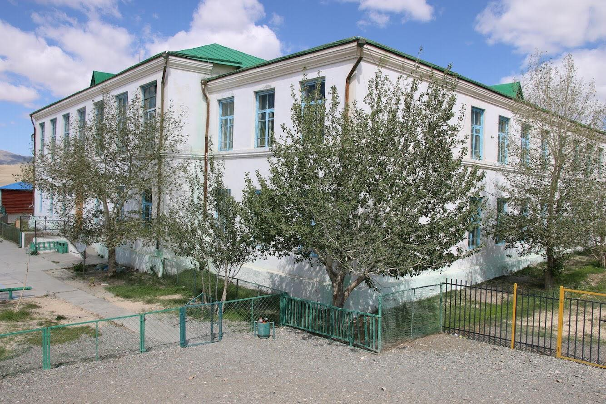

Цахим орчин ба сургууль
Эндээс та Ерөнхий боловсрол, Насан туршийн, Тусгай хэрэгцээт, Сургуулийн өмнөх, Гэр бүлийн хичээлүүд болон мэдээллүүдийг авах боломжтой.
Мэдлээ Цахим контент
Боловсролын үнэлгээний төвийн үйл ажиллагаатай холбоотой мэдээ, албан ёсны цахим хаягаар, утсаар, онлайн чатаар хүлээж авах боломжтой.
Боловсрол, шинжлэх ухааны яам
Бүх ангийн теле хичээл, цахим хичээл, бие даан хийх суралцах ажлын дэвтрийг багтаасан Боловсролын хүрээлэнгийн цахим хичээлийн веб сайт.
Боловсролын хүрээлэнгийн цахим хичээлийн веб сайт
Бидний зарим амжилт
Аймгийн “Тэргүүний хамт олон”
2009
Монгол Улсын “Топ” менежменттэй сургууль
2010
Хүмүүнлэг сургууль
2011
Сумын “Тэргүүний хамт олон”
2011
Аймгийн шилдэг дотуур байр
2012
аймгийн шилдэг Бага ангийн заах аргын нэгдэл
2012
“Даян дэлхийн Нэр төрөө эрхэмлэн дээдлэх өдөр”-өөр БСШУЯ-аас “Шилдэг зохион байгуулагч хамт олон” шагнал
2012
Аймгийн хэмжээнд анх удаа МУ-ын гавьяат багш Гомбын нэрэмжит улсын тэргүүний 1-р сургуультай “Сурагч солилцоо”-г зохион байгуулсан
2012
Говь-Алтай аймгийн шилдэг Бага ангийн заах аргын нэгдэл
2013
Байгальд ээлтэй “ЭКО” сургууль
2013
Монгол Улсын гавьяат хуульч, Хууль зүйн ухааны доктор, професер, хошууч генерал Баастын Пүрэвийн нэрэмжит сургууль...
2014